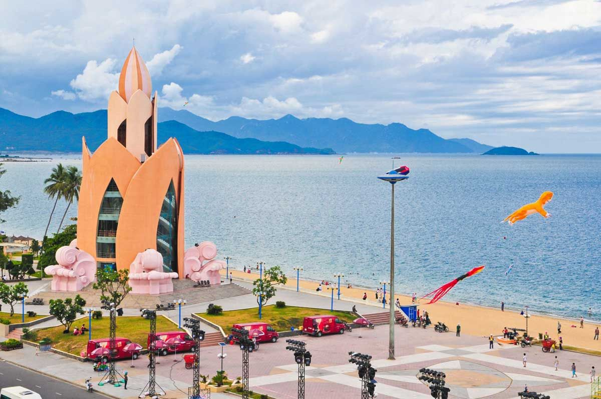
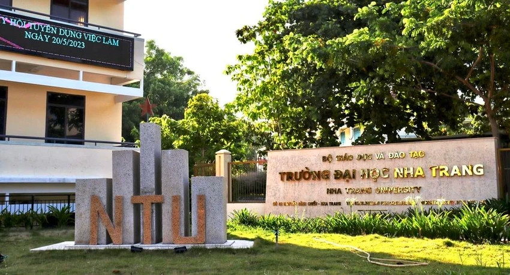
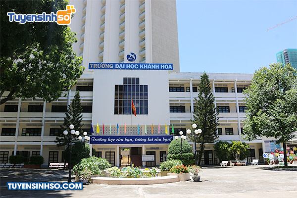

About
Nha Trang is a coastal city in Vietnam, known for its beautiful beaches, clear waters, and vibrant nightlife. It is a popular tourist destination, offering a mix of relaxation and adventure. Visitors can enjoy water sports, explore local markets, and experience the rich culture of the region.
Some places you should visit
- VinWonders
VinWonders (formerly known as Vinpearl Land) is a large-scale, modern, and diverse entertainment park system, making it an ideal destination for families, groups of friends, and all travelers seeking world-class fun and entertainment experiences in Vietnam.
- Tram Huong Tower

Tram Huong Tower is a famous landmark in Nha Trang, offering panoramic views of the city and the coastline. It's a great spot for photography and enjoying the sunset.
- Po Nagar Cham Towers
Po Nagar Cham Towers are ancient Hindu temples that date back to the 7th century. They are a testament to the Cham civilization and offer insight into the region's history and culture.
- Ninh Van Bay
Ninh Van Bay is a stunning natural bay known for its clear waters, coral reefs, and beautiful landscapes. It's perfect for snorkeling, diving, and enjoying the tranquility of nature.
Some Universities in Nha Trang
- Nha Trang University

Nha Trang University is a key institution for higher education in the region, offering a variety of programs and degrees to students.
- Thai Binh Duong University
Thai Binh Duong University focuses on practical training and research, contributing to the local economy and workforce development.
- Khanh Hoa University

Khanh Hoa University is known for its strong emphasis on research and community engagement, offering a range of programs to support local development.